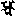

大正新脩大藏經 第54冊
No.2134 唐梵文字 (1卷)
【唐 全真集】
第 1 卷
No. 2134
夫欲[辦-力+歹]識兩國言音者。須是師資相乘。或是西國人亦須曉解悉曇童梵漢之語者。或是博學君子欲得作學漢梵之語者。悉曇文字五天音旨不出此途傅大瑜伽教千歲阿闍梨方傅流通此地並是中天音韻最密要文字出自聲明論本。但有學唐梵之語者。得此為首。餘語皆通。梵漢兩本同學習者。細用其心。一二年間即堪翻譯兩國言音字義同美。夫欲翻譯持念習瑜伽行者。先令精凍此文梵漢雙譯梵字漢字漢識梵言。梵呼漢字者或多或並有二合三合或單或覆但看字母音韻具在別卷聲韻兩段理令諸家有元之教乃各題名目下量漢字智者鑒詳傅於後代。
唐梵文字
ci na 唐 bra hma 梵
dvai 兩 bi ṣa yaṃ 國
va ca nāṃ 言 sva ra 音
le khā 文 a kṣa ra 字
e ka 一 bi dha ra ccha 卷
sva rga 天 pṛ thi bi 地
sū rya 日 ca ndra 月
cchā yā 陰 ā ta paḥ 陽
pa ri pū rṇu 圓 a de śa 矩
di vā aḥ 晝 rā ttri 夜
ā lo kaḥ 明 a ndha ka raḥ 闇
de va ga rja ti 雷 bi myu 電
vā yu 風 va rṣa 雨
tā ra ka 星 sro ta 流
me gha 雲 bi da ni ta 散
ya ti 往 ga ta 來
ā i śa 去 ra i gṛ hṇa 取
pū rva 東 pa śvi ma 西
da kṣi ṇa 南 u tta ra 北
u pa ra 上 he ṣṭa 下
pa ra sma ra 相 pra ti va ddha 輔
svā mi 君 ma ntri 臣
dā sa 僕 di bī ra 使
ma ha rgha 貴 sa ma rgha 賤
ku mā ra 童 va la (（vā la u bhra ？）) 竪
ni ya ta 刊 śā nta 定
pa ri va rtta 品 dra vya 物
a bhi ṣe ka 策 sthi ta 立
na ga ra 州 svā mi 主
sa ra sva ti 辨 śi kṣā ca 教
ni ti 禮 le khaḥ 書
svā pi ta 置 u ru (（？）) 設
sa hāṃ ga (（？）) 衛 ni ga ma 府
pi tā 父 mā tā 母
jye ṣṭa bhrā ta 兄 ka nya sā bhrā ta 弟
śo ka 孝 a rtha 讓
vṛ ha ta 弘 pra sā da 撫
bhā ghi nī ya 甥 sa ra 舅
pṛ tha k 異 pa ri dhe ṣi 隣
jye ṣṭa 伯 pi tṛ ya 叔
e ka sthā 同 me la 聚
pra ṇa ma 奉 kā ri 事
mi tra 友 ma kṣa 朋
vi nī 不 ā vṛ ta 懌
da ri dra 貪 a dra vya 窶
pa rva ta 山 aṃ ga ṇa 庭
u cchra pi ta 軒 ccha ttra 蓋
śu ci 淨 a ṭa vī 野
pu ṣpa 華 sta mbha 柱
pu ṣṭa 美 sā mā pta 景
sa ha sra 千 śa ra da 秋
ku śa la 嘉 saṃ cā ra 傳
pra bhe da 萬 pu ra ṇa 古
pu ru ṣa 男 strī 女
pra tyā ga ma na 迎 vi va ha 嫁
ha kkā ra 喚 jī vi taṃ 命
ni mi tta 招 ā ka rṣa 追
kri ṇa 買 vi krī ṇa 賣
ha ṭṭa 市 pra sā ra 店
ni kka la 出 pra vi śa 入
gṛ hī 俗 ka ra ṇī ya 緇
saṃ vya va ha ra 交 ja va 馳
va ṇi ja 商 bi krī ṇā 貨
pra sā di ka 妍 du rva rṇu 醜
va la va huḥ 強 du rva la 羸
pū rva 先 pra sā da 蒙
sto ka 少 pho va ni 贈
a dya 今 pra ti pū ja 酬
gu ru 重 ho va ṇa (（？）) 遺
e ka 一 śrū ta 聞
śi lā 砥 śai la 礪
pu na 再 saṃ jñā 想
ga rha ṇa 藏 nī ti 規
sai ra va 謹 śa rī ra 身
pa rdhva 節 du rbhi kṣā 儉
vi ga tā 離 i ha 此
a ta 面 ko 誰
ni ṣṭa 降 va ra 希
vi rū pa 惡 ni rnṛ ta 滅
sa rva kā la 常 gu ru śra ddhā 敦
pu ṇya 福 sva sthi ta 綏
pī ṭa 禍 ya thā 如
pra ti śa vda 響 pra dyu tta ra 應
ku śa la 善 ya thā 若
ccha ya 影 a nu pa (（？）) 隨
ci tra ka rmma 圖 nā ma 名
mu ktā 璀 śre ṣṭa mu sa la 璨
ku ṭa 積 saṃ skā ra 行
gu ṇa ja 藏 śa ddhā la 蕤
ta thā 如 gu ru 欽
bi daḥ 叡 pra jñā 哲
ya thā 猶 va ḍi ta 裏
śa vda 聲 ā ra 錐
ya tkiṃ ci 咸 ma hā 京
gau ra va 遵 gu ṇa 德
ka ccha pa 龜 u dghā ṭa 啟
de va ta 神 śa stā 師
vyā khyā naṃ 講 pa tha 道
śa stra 論 maṃ ju 妙
ā spho ṭa 激 dyo ta 揚
bya va hā ra 理 a rtha 致
a kṣa ra 文 ā sthā yi 參
u pu ra pa ra 疊 ta la si 席
pra jñā 聰 a ti krā ntā 過
dṛ ṣṭā 閱 ca tvā ra 肆
saṃ pu ra (（？）) 玉 ra ca na 砌
mre ra 推 bha dra 賢
pā ṣa ṇa 石 vā ha 渠
bha ga (（？）) 讓 a na ti kra ma 次
vi cā ra 撿 pra tya kṣa 驗
ho ti 是 a nya thā 非
pra vi ja ya 提 sa ma 撕
mū rkha 愚 jñā na 智
kā ka li 指 pa ti ta 落
pra va [泳-永+厚] pu ṣpa 花
śo ka 詩 ni ṣpa nna 成
pi ḍa 公 ma ryā dā 含
su rā ga 翠 ka lā ma 筆
a na 不 a ccha 停
ro ma 毫 pa da 句
ni ru pa tra va 寧 pa ri va rtta 易
a kṣa ra 字 a bhi prā ya 意
saṃ ke ta 在 ri ja 忠
spra ṣṭa 有 pra ti ṣe dha 弗
a pi 尚 mi thyā 邪
pro sā ka (（？）) 媚 ke va la 獨
pra vi ve ka 暢 ga mbhī ra 幽
sa tva 情 a va na ta 偏
ā ka rṣa 抽 pra śni ka 雅
ci nta 思 ku śa la 善
sa ya ho (（？）) 戒 ke ṭṭa (（？）) 成
ja na 仁 na dya 縱
ci tta 心 ma 匪
bhā ja na 器 bhā ga 寸
ci hna 標 mā 勿
jñā gu psā (（？）) 嫌 kha rkha ṭa 固
du ṣka ra 難 saṃ ma nta 周
saṃ pa nna 備 sa pta 七
kra ma 步 va k 辭
dū ra 遠 trī ṇi 三
saṃ kṣe pa 略 du ra va bo dha ti 玄
gu hya 秘 tu lya 衝
śra ddhā 信 sthi ta 在
ja na 人 a bhi pra saṃ na 誠
nā ta va o (（？）) 未 sra va ti 淪
pa ti ta 墮 ka tva vā ra 兵
śa stra 戎 se tu 偃
śu la 戟 yo dha 武
kṣa trī ya 帝 a ge ta bhū (（？）) 騰
jye ti 輝 ri dvi (（？）) 通
ra thya 衢 dhā va 走
sthā na śā la 驛 gra ntha 結
kṣu ṇṇa va rmma 陌 pa ri ve ṣṭa 縈
dhva ja 旗 na va 九
na dya 江 ha kṣa (（？）) 躍
pa kṣa 羽 ca tvā ra 四
sa mu dra 海 da rśa ya 星
te ja nāṃ 威 tāṃ mra 銅
gṛ ha vaṃ ga 梁 cchi tṛ 截
pra pā ta 險 kha ṅga 劍
dha va la gha ra 閣 pra yo ja na 要
ṭā va jya (（？）) 機 bha lla 將
a va ska nda 謀 vi dha vī [(宋-木+?)/(冗-几+力)]
vi nā śa 敗 a nta 臨
ddha nddha 敵 ka dā ci 慮
pa ra ma 徵 ja ya 勝
ka ṅja 懷 ma hā 大
bha ya 懼 da dā mi 錐
sva ṇpa 劣 mā 莫
pa ri bha va 欺 ma tsya 魚
vi ta rka 麗 ke va la 並
kra ma 進 krau ṅca 鶴
pha lga na pa kṣa 翼 yu ga la 雙
u ta ya ti 飛 ru kta 赤
ci nta 心 jā la 罔
ka va ṭa 詐 pī ta laṃ 黃
u dbhe da 泉 aṃ gu ṣṭa 損
pra tye ka 期 a di 元
pra tha ma 首 tu ṣṭa 忻
u tsā ha 効 dā ya 賞
sthā naṃ 職 a nu tna ta 靡
vi ci ki tsā 疑 vā hu 肢
ū rū 肱 ya tna 竭
dṛ ḍha 操 sa kha ya 佐
pa ri cā ra ka 弼 de va 天
so pā nāṃ 基 svā mi 君
ma ntrī 臣 gau ra va 道
a ca śa 合 a dha kā 宜
ra ma ṇi 保 maṃ trī 神
da e ta o 姿 ca ṇa kā ta lā ra (（？）) 米
a ṭṭa ka ṇi ka 麵 i dha ra 柴
aṃ ga ra 炭 pu cya 養
jā ta 生 ho ta 是
ā śṛ ta 託 ghṛ ta 蘇
tai la 油 ṣa ṇi 石
mā kṣi ka 蜜 la va ṇa 鹽
śu kta 醋 tī va lā 羹
dra va 臛 ma ṇḍa 餅
pha la 菓 mo da ya 喜
la tu ka 團 gu ḍa 糖
i kṣu 蔗 ā svā da 噉
ca rva 嚼 sā dra rka 薑
tu mbhu ru pha la 椒 ra rthī 芥
pi ṇḍa la 末 pa ca 煮
pa kka 熟 a nu mā na 斟
da rvi u tto la 酌 gau 恭
ra va 謹 a pe kṣa 敬
dha ra 持 phe la (（？）) 盤
pā tra 盂 sṝ ti sa na 箸
sa kā ra 着 phe ḍa 却
ve śa 坐 a ghi la 小
kha ṭṭa 床 gra nthi 返
va ndha 沽 va stra 衣
ko ṇa 角 bhuṃ ja 喰
sa ma pta 蘿 saṃ cā ra 遷
sthā na 位 da nta 齒
kā ṣṭa 木 kaṃ ka da 梳
dho va 濯 gā va 牛
śa kṛ gī 冀 pra le pa 塗
puṃ cchi da 拭 śo ca 洗
pra kṣa li ta 條 ka lā ci 匙
ca ṅṭu 杓 ko ṣṭi ka 倉
gaṃ ja 庫 ra ndha na śa la 厨
śa la ma ṇḍa pi 廳 ṭha va su kha 安
saṃ ca ya 堵 sthā lī 釜
ka ṭṭa ha 鑵 ṭu ri (（？）) 刀
a dā trāṃ (（？）) 鎗 gha ṭa 盆
ku dbha 瓮 ku ṭā rī 斧
śū rpa 箕 ra jju 繩
va ra traṃ 素 a ti kra ma 違
vi lo ma 拒 rā ja śā sa na 勅
e ke ka 條 ra ja ku la 官
a dhi ka ra ṇa 司 gra ha 執
ba ndha 縳 pa ri mā la 養
śa rī ra 身 ja nī hi 知
ma nda 患 sa hā ya 逐
śā nti 靜 va na 林
ta nu 薄 gra ma na 專
ca ryā 崇 sva bhū mi 社
pra bhū ta 多 saṃ pra ṣa 遣
e ta 斯 sī va na 村
la gna 着 va sa nta 春
ha la 耕 vā vi 種
va vaḥ 植 ā he ṭā [田*支]
kṣe tra 畒 sa mā ra 營
kṛ ṣi 農 u dghā ṭa 決
pu ṣka ra ṇī 油 a va tā ra 降
va rbha (（？）) 澤 ha la 梨
ma thi 攚 dā na 施
śya ma ddhā (（？）) 功 sā la sya 嬾
ka tvā vā ra 夫 sū ryo da ya 晨
śa ya ti 霖 u myu kta 勒
sa tyu ru ṣa 土 rā trī 霄
u di ta 興 ma strā ka 鞭
la ku ṭa 伏 śa ka śa 東
yu ga 轝 kha ra 驢
bhā ra 馱 a śva 馬
yā na 乘 pha la 排
śa kti 槊 dha nu ṣi 弓
kā ṇḍa 箭 śa tru 逆
a ḍa lo ma 順 bha ga 分寸
dhyā nya 稻 ti la 麻
sa sya 豆 go dhū ma 麥
śa la ka 籌 mā va 量
da śa ā pha ka 斛 pra stha 升
ga ṇa nta 數 ga ṇa na 計
ga ṇi ta 算 bha ṅga 布
pa ṭṭa 絹 ri stā ha kta (（？）) 尺
ha sta 肘 sthi ya (（？）) 手
bhṛ ta ka 雇 ā rgha 價
ā śra ya 依 vi da sti 度
pra tya ya 憑 sū traṃ (（？）) 縷
sū cī 針 sū traṃ 綖
ka gha 裁 sī va 縫
vī thī 街 gī ti 吟
bī dhi ra ccha 巷 nā da 吼
ru ṣṭa 嗔 ha si ta 笑
ma ṅga lya 吉 a ma ṅga lya 凶
cchi nda 絕 śi kha ra 嶺
na va 新 aṃ ku ra 芝
ā kā śa 碧 空
pī ḍa 危 kuṃ ja 巒
pu rā ṇa 舊 ke sa ra 蘂
ku su dbha va rṇa 江 u dghā ḍa 鮮
va ddha na 帶 pa thya 宜
ā ka rṣa 攀 bha gga 折
sā ma nya 共 ā sa rbha 鄙
kṣe traṃ 田 gha ra 家
pī tā ma hā 翁 ā rā ma 園
ri ṣi 仙 vṛ kṣa 樹
mṛ ga 鹿 u dyā na 苑
rā ja 王 ko ṭṭa 城
gṛ ha 舍 ṭā ṅga 梨
syāṃ 之 vi ṣa ya 國
ka ṇpa 劫 a nu mā na 比
ca lla ni 羅 ko ṭṭa (（？）) 城
pa ri va rtta 廻 a va lo ka 觀
prī ti 戀 a nya 別
pa kā ra 報 ā kaṃ kṣa 望
pra sā da 恩 jā ta 生
ku kku ṭa 鷄 śi kha ra 峯
a nta rvā na 隱 a sthi ka 骨
nā ga 龍 cchi dra 穴
a dṛ śya 潛 saṃ sthā na 形
dhyā na 禪 na dī 河
pā nī yaṃ 水 ga mbhī ra 濬
śī la 戒 gi ri mū rva 巘
sai la 巖 sva ccha 清
ku vja 俯 ka ru ṇa 悲
ra ja 塵 sī mā 界
mai trī 慈 pa tā ka 和
sa dā 求 ka mpa 振
pra jñā 惠 ū lka 炬
dī rgha 長 pra bha 榮
a ḍa la gna 扶 sī ma sa nvi 關
ṣa ṭ 六 ga ti 趣
u dghā ḍa 開 dhe phi ta (（？）) 圍
da śa 十 a ndha kā ra 冥
a pa na ya 袪 bhe ta 除
śī ta jva ra 虐 bi ṣa 毒
ha sta na kṣa tra 軫 kṣa nti 忍
kṛ ṣṇa 黔 śa pa [?*(艮-日+口)]
ga ndha 虗 kū ṭi 堂
vyū ha 嚴 pra ti mā 像
le kha 書 li kha 寫
śre ṣṭa 尊 sū tra 經
bu ddha 佛 dha rmma 法
sthā na 處 sā rya (（？）) 位
saṃ gha 僧佉 gau ra va 道
jva la 明 ta tkā la 當
pra kra ma 修 vya va sthā 軌
śa ka ṭa pa tha 轍 pho kka 至
ni rvā ṇa 涅 槃
na ga ra 城 kā ṣa ya 袈
裟 ka ra ka 瓶
prā tra 鉢 śa ya na 臥
a sa na 貝 va stra 衣
pa rhya ṇa 裳 prā ṇa ka 蟲
mū ṣa ka 鼠 tra sta 恐
ca rva ti 却 dhau va na 院
so ṣa ṇa 灑 pra sā ra 舒
bi ka sa 張 va rṇa ka mva la [翟*毛]
毹 pṛ ṅga 綾
ci tra 錦 sū ci ka rmma 繡
sa va rṇu 鏗 śa vya 鏘
la jja 恥 nā sti 無
ju gu psā 嫌 ka sto rī 麝
dhū ma 香 sto tra 讚
sta vā di 詠 gā yi 歌
tū ri 管 nṛ tya 舞
bhe ri 鼓 su gho ṣa ka 笙
vī na 篁 śi kṣa 學
pa ṇḍi nya 問 vi pu la 博
jū ta 弄 vra hma 梵
sva ra 音 ccho ṭi ka 彈
ji hva 舌 si ddhāṃ 悉
曇 ma ra 莫
bi sma ra 忌 pra ṇi dhā na 願
e ta 慈 la bha 利
pra sve da 潤 sa ma nta 普
u ṇḍka (（？）) 洽 nā sti 無
sī mā 彊 ta vā 旦
a ṅga 題 a ṣṭa 八
śa ta 百 a nya 余
sa ma nā 皆 ni pu ṇa 審
pra tya ve kṣa 詳 kṣa ṇi ka 聊
śa rī ra pra kā śaḥ 申 śi kṣā 學
bhā ṣa 語 i ccha 欲
ya śa [馬*虫] le kha 天
li khaḥ 章 he tu 因
ka rmma 業 bi pā ka pra tyu vā ca 報
ā śṛ ta 託 pra ti bi mba 形
mā tu 母 ga rbha 腹
a 無 bi dyā 明
pra bha (（？）) 發 saṃ (（？）) 行
sva rā (（？）) 試 syāṃ 之
vi hā na (（？）) 起 kta śau lā (（？）) 催
nā ma 名 rū pa 色
e vaṃ 是 a sti 有
ṣa ḍa 六 ya ta na 處
ga ti 奚 u dghā ḍa 開
dṛ ṣṭa 見 jā ta 生
vya kta 雖 tu ṣṭa 喜
vṛ ddha 老 mṛ ta 死
ni va rtta 還 ru da na 哀
u dve ga 憂 ka ru ṇi 悲
pū rva a nā di 始 ga ta 去
duḥ kha 苦 kle śa 惱
a nta 終 sa va ṭa sa tvā 廻
ta thā 如 ga ta 來
ma hā 大 ā rya 聖
ti kka la 出 dṛ ṣṭa 見
e ki kā 布 vi ṣa yaṃ 國
pa ri va rtta 轉 maṃ ju 好
dha rmma 為 ca kra 輪
a ti 極 e ta tū 斯
sa ma 沈 juṃ jji 溺
a na ti 始 na cya 從
mṛ ga 鹿 u dyā nāṃ 苑
ku śa na ga ra 俱 尸
那 u tta ra 北
maṃ ṣṭa 所 pra kā 演
vra hma 梵 （a ）kṣa ra 文
ṣya 數 nā sti 無
da ti dra 窮 a ti 極
da śa 十 da śa 捨
stā te 為 śa ta 百
da śa 十 śa ta 百
ca bhdra 曰 sa ha sra 千
da śa 十 sa ha sra 千
stā te 為 a ti kra 萬
da śa 拾 a yu ta 萬
ca bhdra 曰 la kṣa 億
da śa 十 a ti ta la kṣa 億
a ti 為 sa ma ptā 京
ko ṭi 兆 sa rva 諸
bho dvo 反 pra ti 載
dha rmma 法 sa mu dra 海
pā 波 ra ṇa 瀾
i ccha 欲 a dya 令
sa rva 一 切
bha lā 離 duḥ kha 苦
ra ṇa 皆 ṭha ya 安
ma ntra 真言 sā tva 密
su a rya 教 tye gu 遇
syāṃ 之 gaṃ bhī ra 甚
ā sti 希 ma 有
śra ddha 信 bu ddha 佛
pu tra 子 ci tu kā rmma 京
vi dā nāṃ 授 ta jñā lā 當
bhū ri 觀 pra bhā 發
bo dhi 菩 提
ā phi pra 意 pra ti śa 入
ṣi hi 灌 ca vaṃ 頂
da bhā su 壇 va stu 依
śre ṣṭa 尊 la i śa 取
ca na cṛ 則 si ddhi 悉
地 ca śā 能
ṭhaṃ ya 于 bhū rī 想
śre ṣṭa 尊 sa rva 遍
dhā tu 照 dī da nā 鏡
dṛ ṣṭa 現 vī ṣa ya 水
dṛ ma 雲 ni ya 甚
pe gha 深 śaṃ bhī 密
gṛṃ bhi 藏 dha rmma 法
pa thā 道 rā ja 王
svā mi 君 sṛ mi da 嚴
ja ya 勝 va jra 金剛
bha ya 身 svā 青
tṛṃ 不 kaṃ tpa 動
jñā na 去 daṃ ṣṭra 牙
pra bhā 發 jā ta 生
va sa nta 春 ta thā 如
de va ga rja na 雷 nā da 吼
va jra 金剛 ma ṇi 寶
sa ā rya 教 tye saṃ ca 溥
mai trī 慈 su va 弉
ra ṇaṃ 勸 ta thā 如
ga ta 來 a bhi ṣiṃ ca 灌
u ṣṇī ṣa 頂 jñā na 去
a gni 火 ma sa na 珠
a va na 明 dha rmma 法
ttā ya 性 va jra 金剛
bhū ri 觀 śi kṣā 察
jñā na 智 ma stu 母
ti ṣṭa 起 ca tu 四
rga dya 量 ci ttā 心
sa va ra 轉 ci kra 輪
ca pra 能 pe rga dya 久
ka rmma 羯磨 ma hā 大
jva la 明 la tva 尅
si dvī 成 pra śa 眾
pha la 〔sū 〕 果 ra tta 樂
sa va ttā 周 du ra va dhe 玄
dhā maḥ 英 ma jja 隨
sma ra 念 a du 具
ā sa na 成 ni ṣpa nā 海
sa ma 會 dra maṃ 曼
ḍho 荼 ā rya 聖
va tā 者 ma hā 大
sū rya 日 ca tvā ra 四
bu ddhā 佛 dhe  波
lla 砢 da śa 十
ṣa ṭ 六 bo dhi 菩
sa tva 薩 dā kā 內
pa mā 外 ra ve 供
va su dya 養 ca tu 四
kā ṣa 攝 pho ṣa 自
la bha 利 sā rya 聖
bu ddha 佛 bha dra 賢
sā rya 聖 bha dra 賢
ka ṇpa 劫 ja na 人
mai trī 慈 ma mi 我
mi ra 已 tra ya 三
ka rmma 業 taḥ yaṃ 救
tā na 世 ā cā rya 闍
梨 e kā śrā ma 傳
dha rmma 法 tyāṃ 方
śru vi 便 bhū ta 真
tṛ 不 na ca 思
ni tti 議 pa pra 重
ja ta 悲 caḥ 作
ra kṣa 謨 mo 穆
khā 佉 ma hā 大
śi kṣa 師 mo 最
śāṃ 勝 ya ga 瑜
伽 ṣṭaṃ na 持
jva la 明 stu 制
pa ti 底 ā śra 依
ya di 於 ma hā 大
śi kṣa 教 maṃ 曼
ṇḍa 荼 sa tvā 密
u rgha ṭ 啟 stā te 為
pho ta 利 yo jī 末
vya va 世 stā na 軌
ca ni 議 sa ra sva ti ni ti stu ḍa 宗
ṣa va 讚 sta vā di 詠
sa rva 諸 ā rya 聖
sāṃ 近 ma sa 曆
tri ṇi 三 bha dra 賢
tu ma 次 dhi ṣṭa 修
da śa vi 拾 sā rya 聖
pra ma 歡 di ta 喜
vi 離 ma la 垢
pra bha ka ri 發 pa cha śa 光
jva la 明 dīṃ 成
ā rvi 焰 sma （bhī ） 惠
duḥ 難 ja ya 勝
a cī kha 現 mu kha 前
pū ra ṅga ma 達 u dghā ta 行
a 不 ca ra 動
sā dhu 善 ma hu 惠
ma ti 法 śrā tā 雲
kra ma 次 sa mya k 正
su 妙 bu ddha 覺
ta thā 如 ga tā ya 來
ḍhi stu 稱 ma hā 大
ti mi 應 ṣa ya 鏡
tri mi 三 dhā tu 界
śaṃ me 最 śre ṣṭa 尊
da śa vi 十 tyāṃ 方
maḥ 莫 saṃ ma sa 並
sa dhi vaṃ 擁 e vaṃ 是
sa mu bha va 化 ja ttā 方
ja tta ta tta 生 pa drā 于
i ha 此 sa ma pta 境
va lo 號 ca ndra 月
mu ṇi 牟尼 nā da 吼
va ha ra 李 kṛ la mu tu 推
ā rya 聖 na dya kā 從
ṭa tā ma 何 gau ra va 道
ta ga ta 來 ta ṅga 總
na ṣṭa na 持 stā to te 為
kā ṭhā 逕 ā 依
tyo 教 yo ya 奉
sthā ya 行 kkā 至
cī tna 心 u ṣṇī ṣa 頂
stu te 禮
ga ṇa na e ka sa ha sra e ka śa ta śa ti da śa vi ā ṣṭa kṣa ra
師傳五部瑜伽教北平吉詳子全真記
e ka (一)dvī i (二)tri ṇi (三)ca tvā ri (四)pa ce (五)cha (六)sa pta (七)a ṣṭa (八)na va (九)da śa (十)pu ṣyā (十一)ma gha (十二)vi śā (廿)śa tā (百)sa hā srā (千)ra kṣa (万)rpa gu ṇa (正月)ce tra (二月)dhe śa ka (三月)ji ṣṭa (四月)